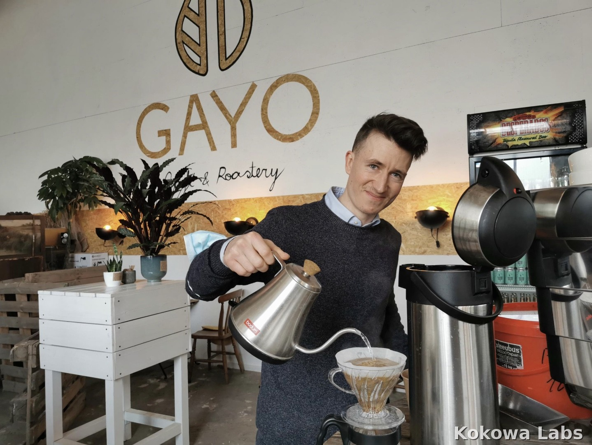
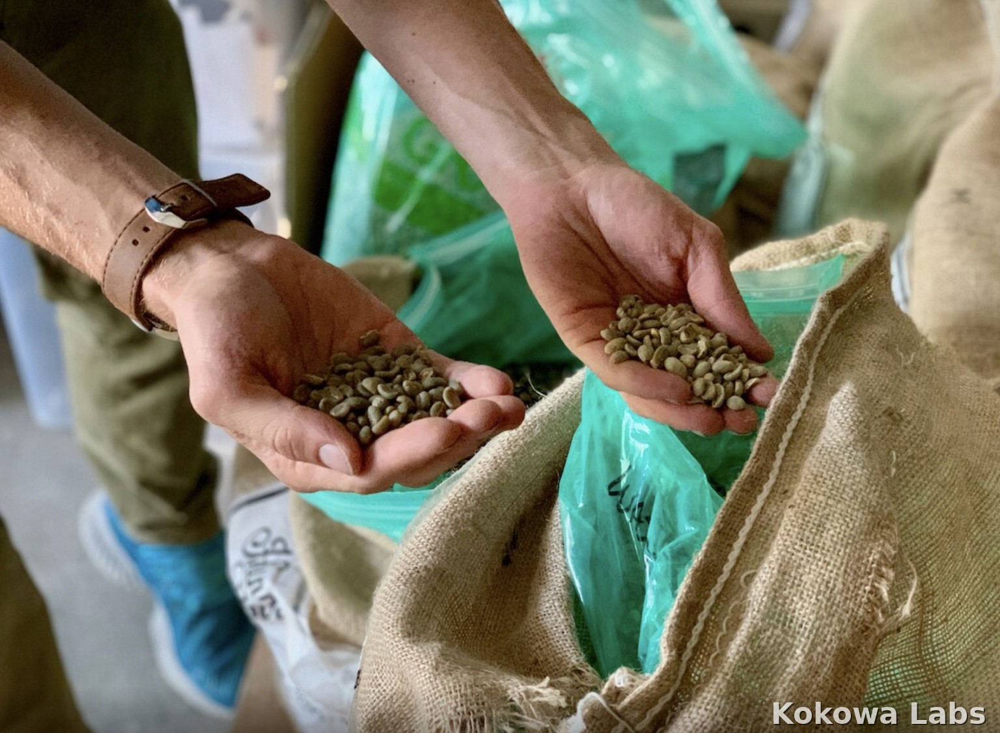
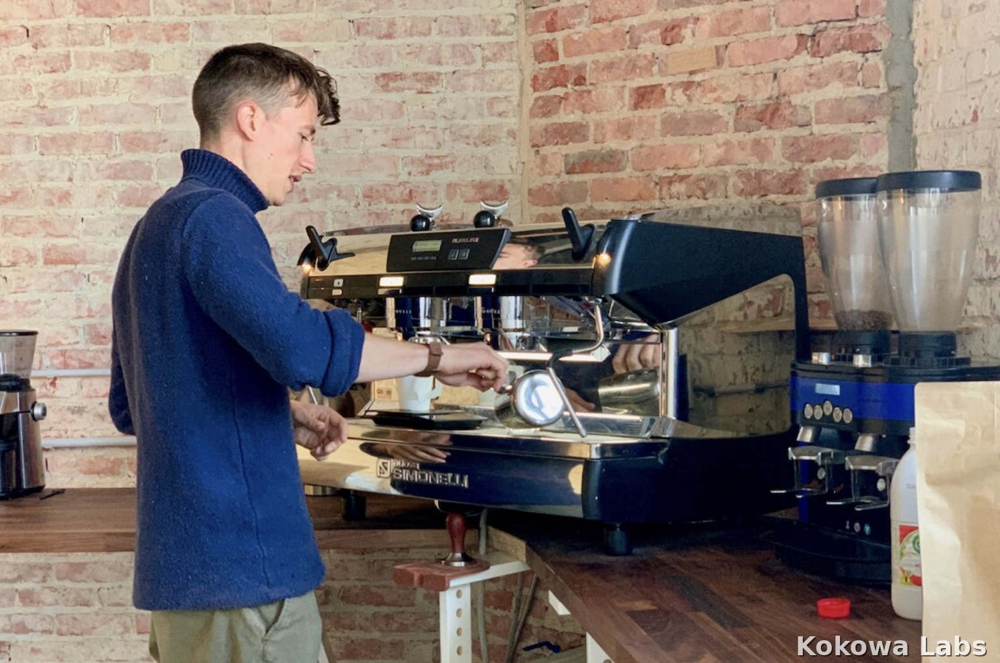
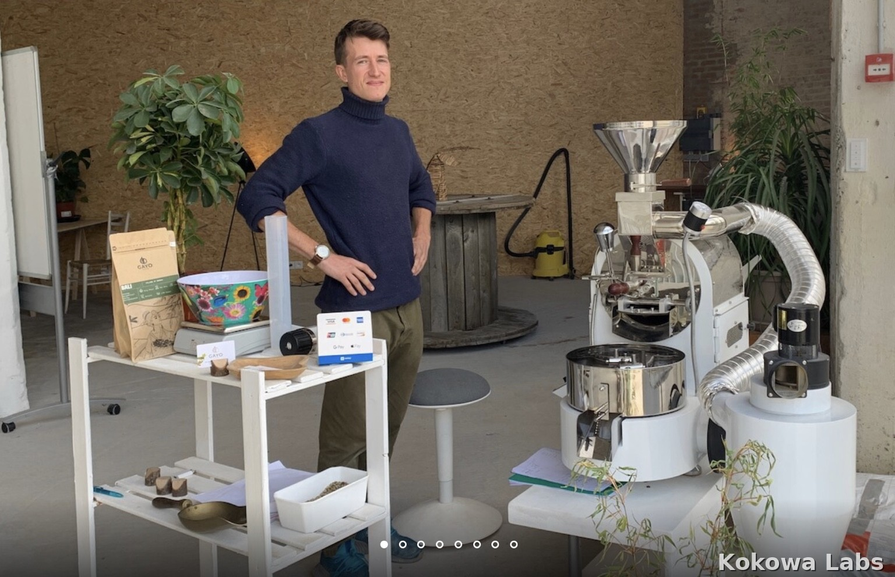
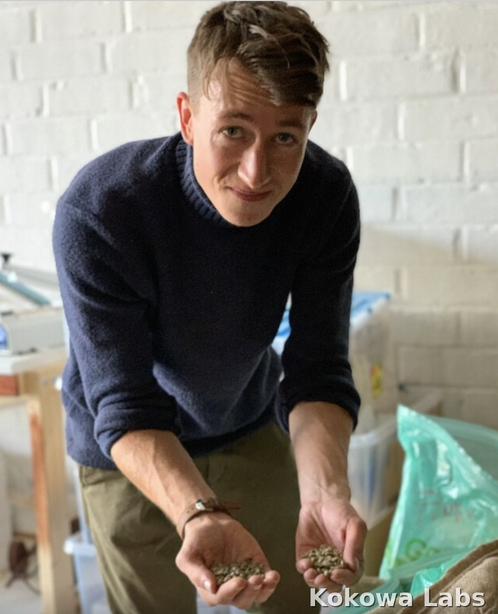
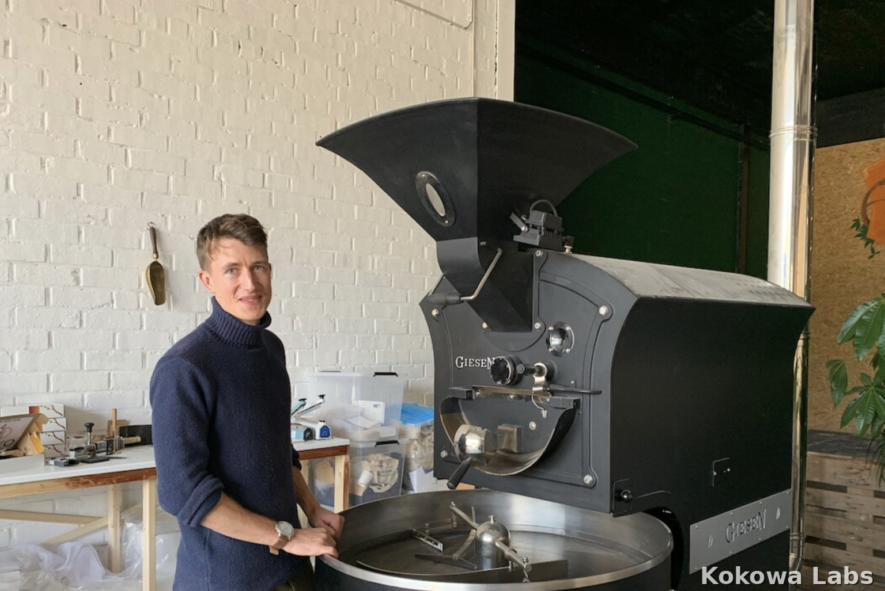
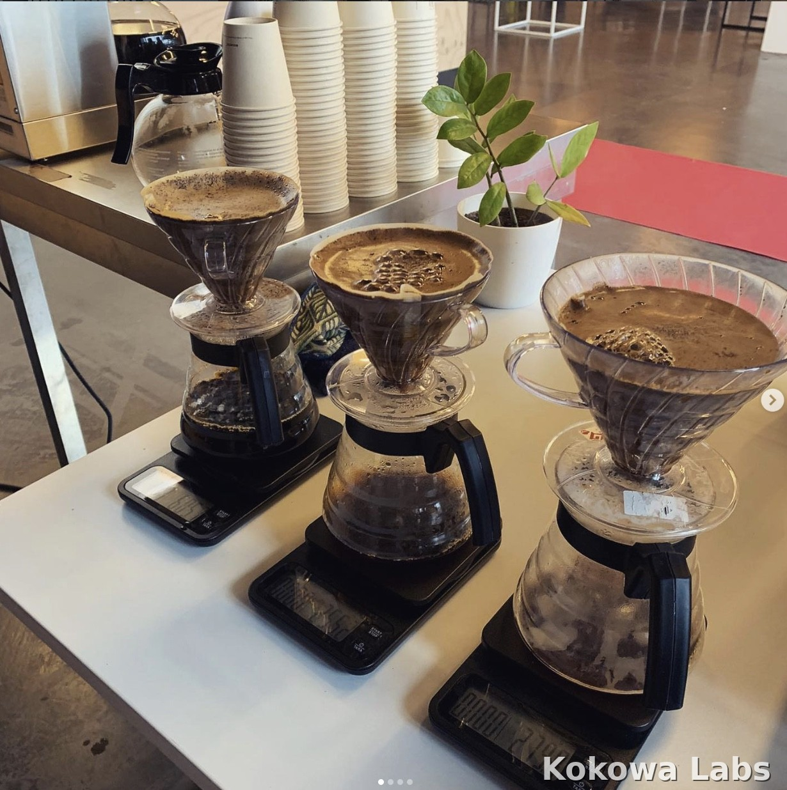
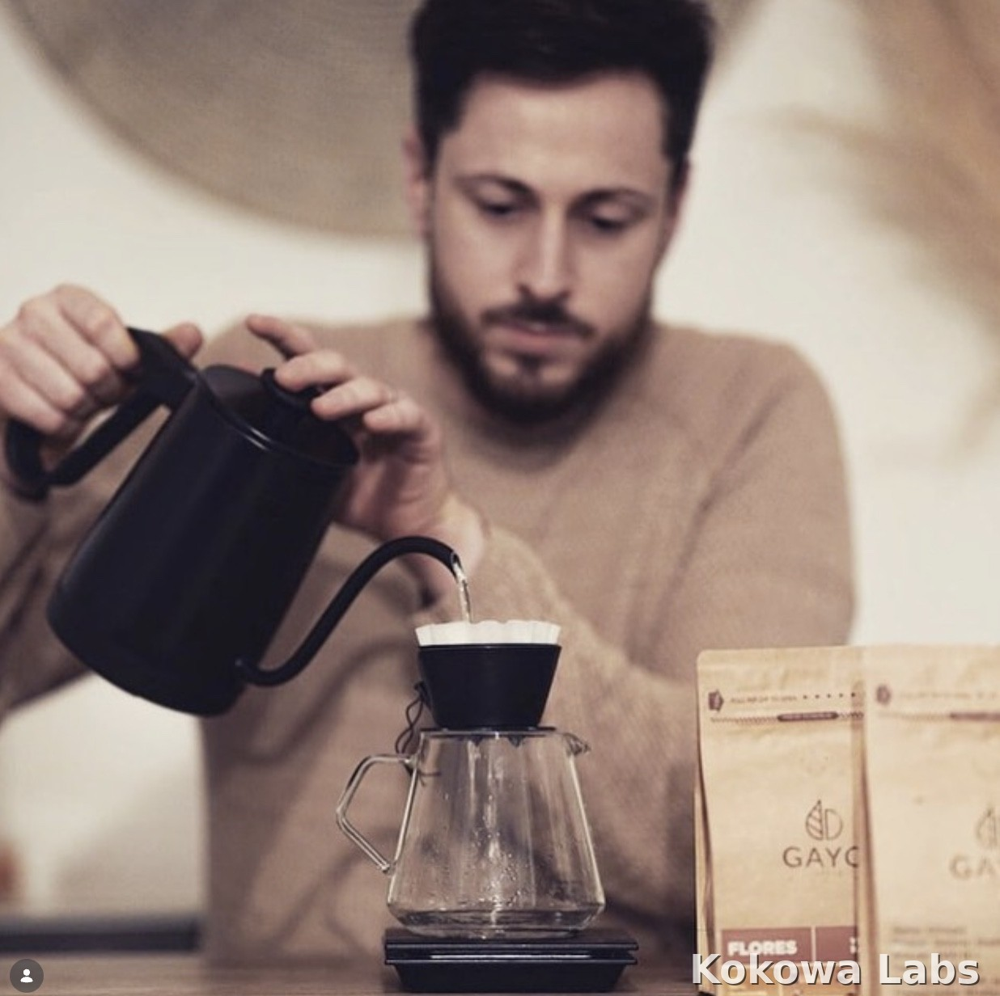
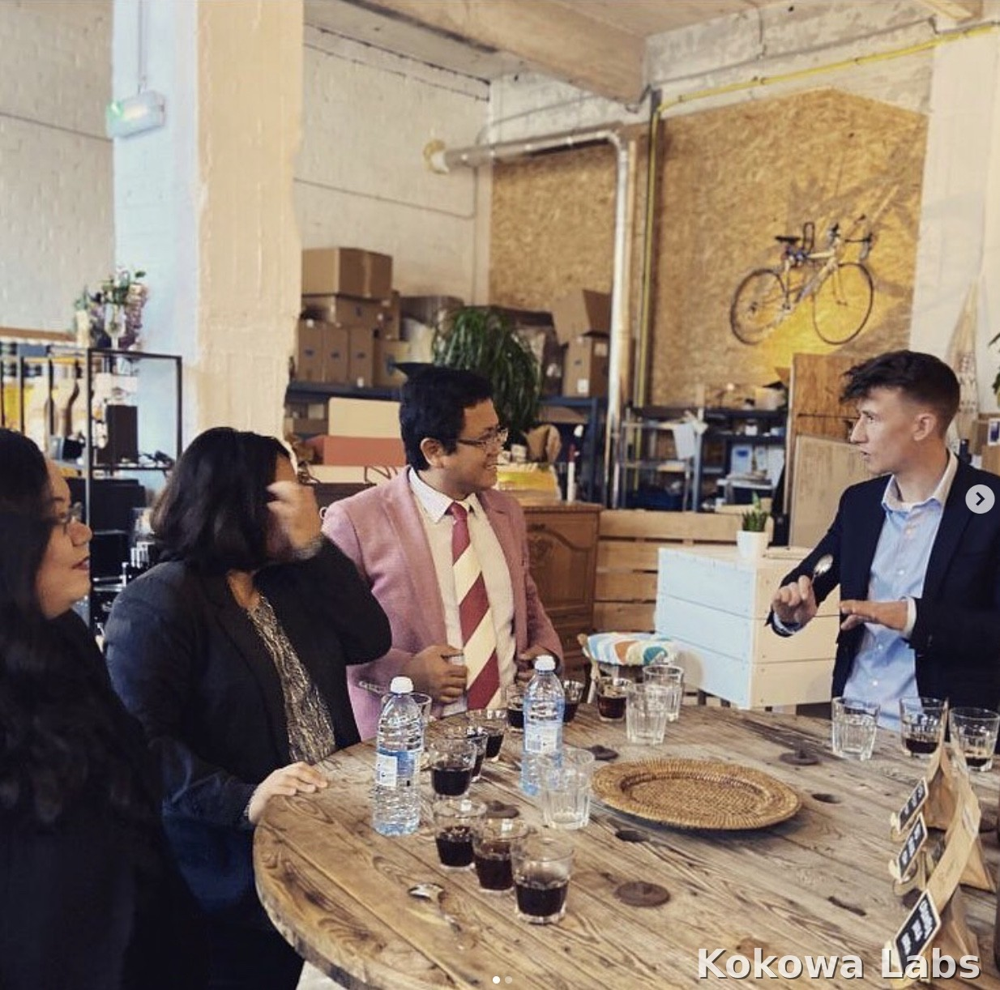
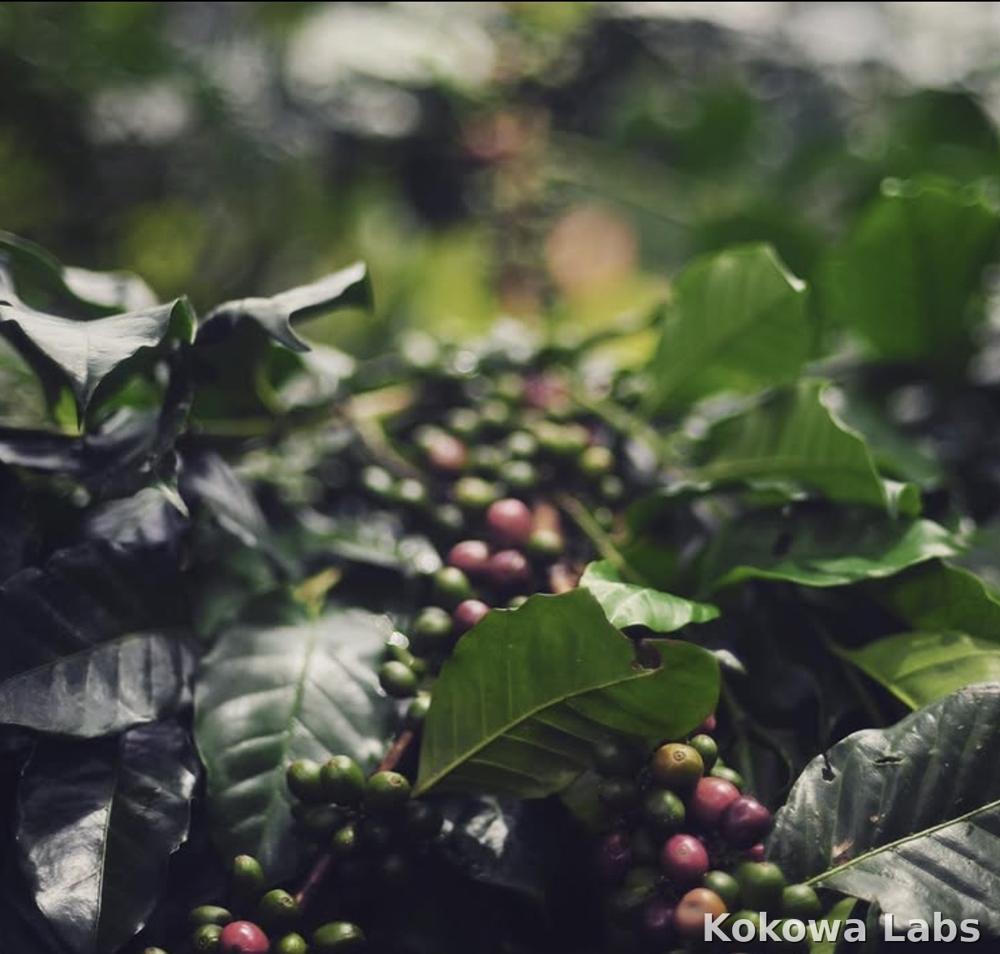

Kokowa Field Labs helps coffee founders build stronger businesses through sharper positioning, better sequencing and more intelligent commercial decisions, from launch to scale.
Capabilities beyond strategy
Why quality alone is no longer enough
Across Europe, coffee shops and micro‑roasteries are multiplying fast, and the quality of the market is rising with them. As quality becomes expected, growth gets harder and differentiation becomes more demanding. In this new landscape, competitive edge no longer comes from coffee alone. It comes from sharper positioning, stronger concept architecture, better sequencing and more intelligent commercial decisions.
That is where Kokowa Field Labs comes in.
Designed for the specialty coffee industry
We partner with founder‑led coffee shops, micro‑roasteries and coffee concepts in pre‑launch, launch or early scale. Our clients have already invested time, capital or identity in their idea and feel urgency to get things right. They’re committed to quality but know that sharper positioning, stronger commercial logic and better sequencing are essential to avoid costly mistakes.
The specialty coffee market is more demanding than ever
From diagnosis to build to follow‑up
Kokowa Field Labs works through three focused engagement formats designed to bring clarity first, then structure, then stronger growth.
Built on end‑to‑end specialty coffee experience
We bring together strategic clarity and real value‑chain intelligence. The work goes beyond coffee quality alone and looks at the business as a whole: concept, positioning, customer relevance, operations, sourcing logic, workflow, margins, growth decisions and long‑term competitive edge. This is for founders who do not want to build blindly, waste time on the wrong priorities or discover expensive weaknesses too late.
From the thinking behind The New Game of Coffee
Snapshots from our field labs and training sessions










Some founders need more than strategy alone. Depending on your business, Kokowa Field Labs can also support selected growth extensions such as origin trips, sourcing perspective, equipment guidance and deeper ecosystem intelligence. These are offered selectively where they genuinely strengthen the business.
For selected founders, origin trips can offer a deeper understanding of sourcing, producer realities, quality perspective and the broader coffee value chain. These trips are not designed as tourism, but as a more meaningful layer of business and category immersion.
Interested in a future origin trip? Reach out through the contact form to ask about upcoming trips.
If you are launching, restructuring or growing a coffee business and want stronger guidance, better decisions and a more competitive foundation, get in touch.